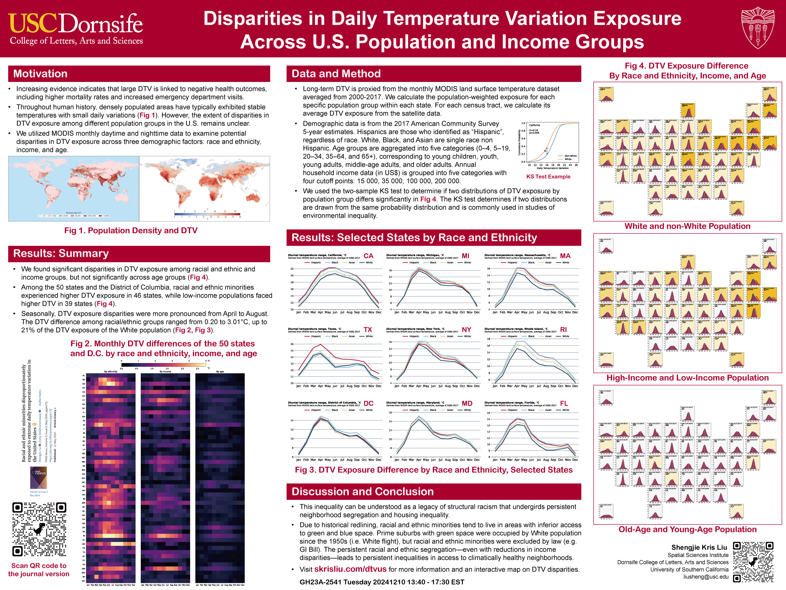

Disparities in Daily Temperature Variation Exposure Across U.S. Population and Income Groups
Check out the poster presentation at AGU 2024, Tuesday afternoon: GH23A-2541 Tuesday 20241210 13:40 - 17:30 EST
Shengjie Liu personal homepage: skrisliu.com
Journal version published in PNAS Nexus: https://doi.org/10.1093/pnasnexus/pgae176
Want to know the DTV exposure by race and ethnicity in all 50 states? Go to this interactive map: https://skrisliu.com/dtvus/map.html
This research has been featured in multiple media outlets, including the United Nations PreventionWeb.

Shengjie Liu (University of Southern California), Emily Smith-Greenaway (University of Southern California)
This is a GitHub repo at https://github.com/skrisliu/dtvus
U.S. Census Tract Shapefile
Long-term MODIS LST day-time and night-time temperatures, sd and differences at 1 km based on the 2000–2017 time series
ACS Table DP05 (race and ethnicity, age), census tract level
ACS Table S1901 (income), census tract level
ACS Table DP04 (rent), census tract level
After downloading the ACS table, please delete the 2nd row “description” and save them as the “clean” version used in the code. We prepared the exposure table (“dfmtable.pkl”) here for the ease of use.
numpy==1.24.3
matplotlib==3.7.2
pandas==2.0.3
seaborn==0.12.2
Zonal statistics of the LST data, each month each year, to census tracts. This is the base data for anlaysis. We did this analysis on ArcGIS (paid software), but with some techniques, it should be able to do the job with QGIS (open source) or in Python.
The world’s annual mean daily temperature variation data in Fig. 1 is from the WorldClim v2 dataset 1970-2000, publicly available on their website.
The population density data is from the NASA Center for International Earth Science Information Network at Columbia University. We use the gridded population of the world v4 in 2000-2020 (https://sedac.ciesin.columbia.edu/data/collection/gpw-v4).
python makefig2_1.py
python makefig2_2.py
python makefig2_3.py
python makefig2_4.py
python HeatMap.py